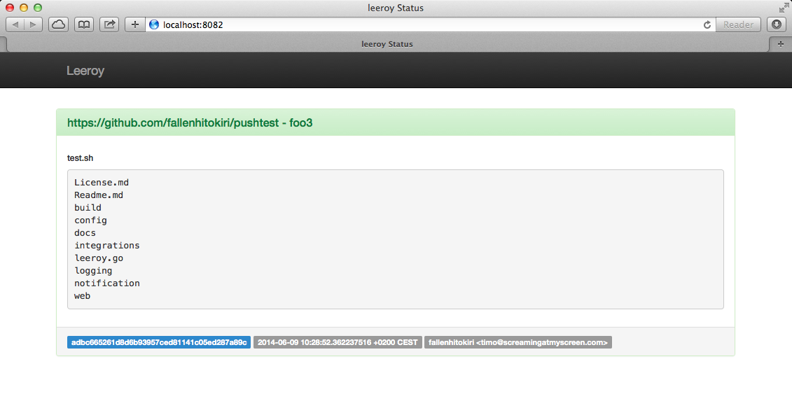

Introducing Leeroy
Today I am releasing one of my side projects, Leeroy CI. It is a self hosted, continuous integration and build service with the primary goal to be easy to configure and get out of your way while doing its job. And since it is licensed under the BSD license it is also pretty affordable.
Leeroy aims to be as simple as possible while allowing you to run tests the way you want. For each push or pull request it executes a set of scripts or commands you define. It shows you the results in a webinterface, notifies you via email or posts to your Slack channel and can also comment on GitHub pull requests or close them if a build failed.

If you have a Django application your build script could look like this
#! /bin/bash
cd /home/ec2-user/test
git fetch
git checkout $2
git pull
source /home/ec2-user/test/.env
python /home/ec2-user/test/manage.py test
Want to test if a virtual environment can be created with your current requirements file? Want to run a performance test? Just create additional scripts. This way you get all test results for a push at once. With this approach you do not fix the first problem (failing requirements) push, notice other problems, fix and push again,... the goal should be that after one failed build you can fix everything to make the next one successful.
Leeroy is not feature complete so this is not a 1.0 release but it is running as primary CI at FlightCar and for my personal projects for some weeks now and did not have one hiccup, so I feel like this is a good time for a release.
I welcome any feature request and help, just check the "Contributing" part in the Readme.
You can discuss this on HackerNews.
I would love to talk to you about this post, your ideas or awesome projects.
I am @fallenhitokiri on Twitter and GitHub or you can send me a mail.